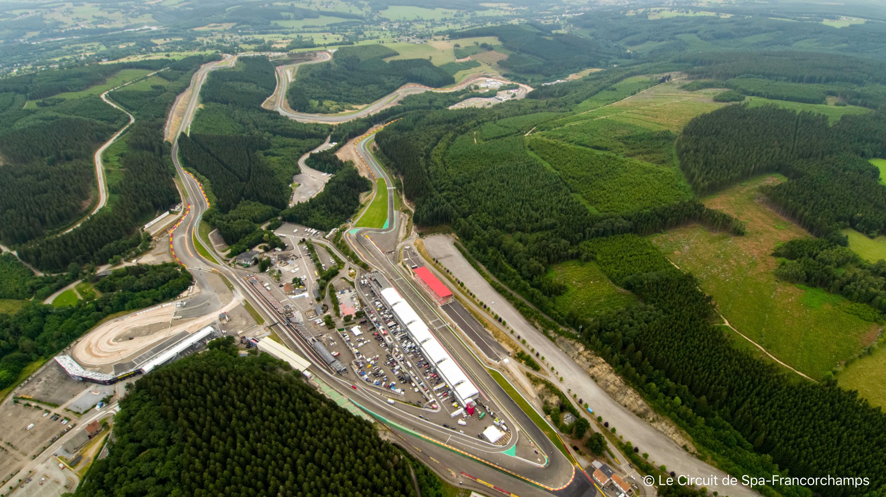

Introductie:
Het Circuit de Spa-Francorchamps, vaak kortweg Spa genoemd, is een van 's werelds meest iconische en uitdagende racecircuits. Gelegen in de prachtige Ardennen van België, staat dit circuit bekend om zijn adembenemende landschap en uitdagende bochten. Met een rijke geschiedenis en een plaats op de Formule 1-kalender is Spa-Francorchamps een absolute favoriet onder raceliefhebbers.
klik hier om naar het circuit 'Spa Franchorchamps' te gaan:
AUTOCIRCUIT SPA FRANCHORCHAMPS Geschiedenis:
Het circuit werd voor het eerst geopend in 1921 en is daarmee een van de oudste permanente racecircuits ter wereld. Het werd oorspronkelijk opgezet als een combinatie van openbare wegen in de Ardennen-regio van België, met steden als Spa, Francorchamps, en Malmedy die verbonden waren door deze kronkelende wegen. Het circuit strekte zich uit over 14,9 kilometer en omvatte enkele van de meest uitdagende en iconische bochten in de autosportgeschiedenis.

Technische Details:
Spa-Francorchamps is een lang en uitdagend circuit, met een lengte van ongeveer 7,004 kilometer (4,352 mijl). Wat dit circuit echt onderscheidt, zijn de hoogteverschillen en snelle bochten zoals Eau Rouge en Blanchimont, die het tot een favoriet maken onder coureurs. De combinatie van lange rechte stukken en technische bochten maakt het een enorme uitdaging.
Beroemde Evenementen:
Dit circuit is vooral bekend om zijn jaarlijkse Formule 1 Grand Prix van België, waarbij 's werelds beste coureurs de uitdaging aangaan om het circuit te domineren. Daarnaast heeft Spa-Francorchamps gastheer gespeeld voor vele andere prestigieuze races, waaronder de 24 uur van Spa-Francorchamps, een uithoudingsrace voor sportwagens die wereldwijd bekend is.
Bezoekersinformatie:
Spa-Francorchamps opent regelmatig zijn poorten voor enthousiaste toeschouwers. De openingstijden variëren afhankelijk van evenementen, dus het is raadzaam om de officiële website van het circuit te raadplegen voor actuele informatie. Toegangsprijzen kunnen variëren, maar er zijn vaak verschillende ticketopties beschikbaar, afhankelijk van uw wensen en het evenement. Bovendien biedt het circuit tal van faciliteiten en entertainmentopties voor bezoekers om van te genieten, waardoor een dag op Spa-Francorchamps een onvergetelijke ervaring wordt voor motorsportliefhebbers van alle leeftijden.
klik hier om een kijkje te nemen op de website van circuit Spa Franchorchamps:
Rijd een ronde mee met Tom Coronel over Spa Franchorchamps: